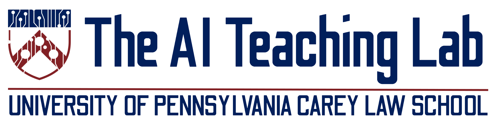

Research·Build·Teach
AI for the legal profession.
The Penn Carey Law AI Teaching Lab researches how AI is changing legal education and practice, builds the tools that put those findings to work, and teaches lawyers, law students, judges, and the profession how to use AI well.
Full site launching Summer 2026
How we work
Research findings inform what gets built. Tools enable more research — at scale and with feedback. Teaching disseminates what we learn back to the field, and produces the questions that fuel the next research cycle. The loop is the methodology.
Who we serve
- Law students — through course tools, virtual TAs, simulation environments, AI-aware pedagogy
- Law faculty — through exam tools, grading research, teaching resources, pedagogy support
- Judges & chambers — through use-case research, chambers-facing tools, judicial AI training
- Small & medium firms — through training, tools, and applied resources for an underserved segment of the profession (next phase)